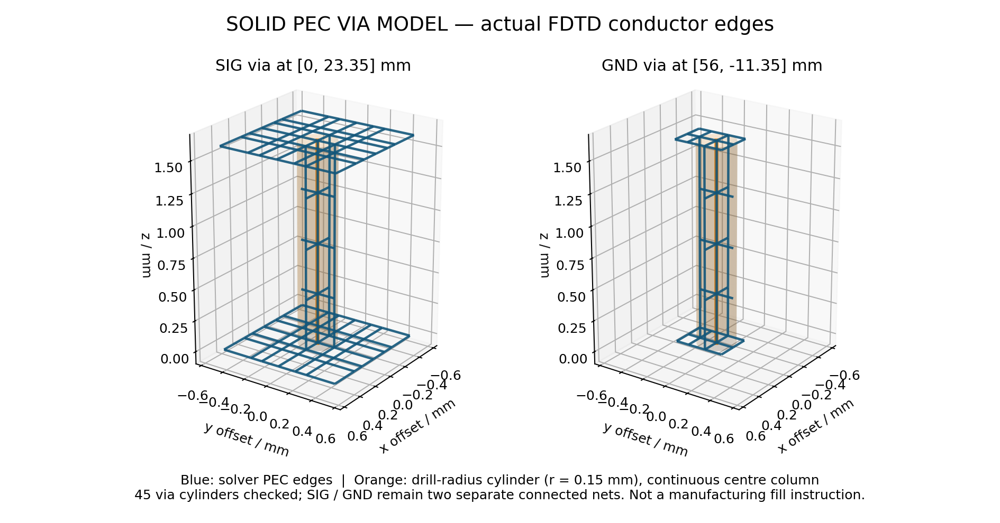
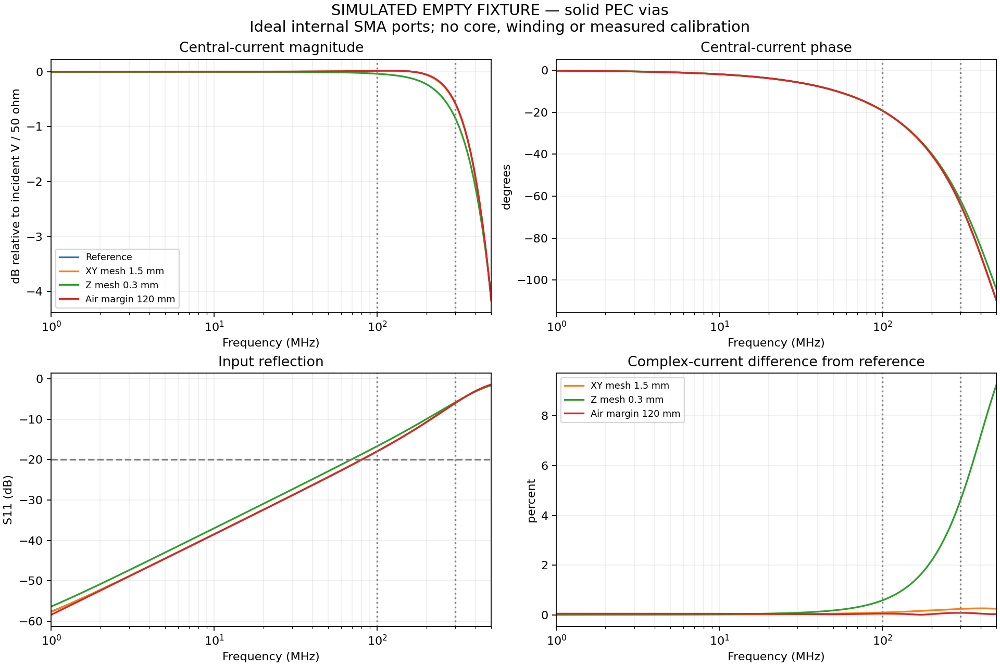

교정지그의 전류 경로와 해석
중앙 도체는 코어 안으로, 귀환은 코어 밖으로 흐릅니다. 해석의 목적은 이 구조에서 코어 위치의 전류와 기준면을 확인하는 것입니다.
50 Ω은 측정 체인의 조건
VNA·동축·수신기 종단을50 Ω로 정의합니다. Ethernet 페어의100 Ω 차동 임피던스와는 다른 물리량입니다. 실제 케이블 측정에서는 교정 PCB를 빼고 케이블을 코어 안에 놓습니다.
지그의 입력 반사가 작더라도 코어 위치의 전류와 위상을 자동으로 알 수는 없습니다. ZT ≈ 50×S21과 입력단 1−S11 보정은 기준면과 전류 경로가 입증된 경우에만 적용합니다.
빈 지그의 모델 조건
Fixture A03 형상에 중실 PEC 비아45개, 공칭 FR4 유전율4.3, 이상화한 SMA 내부 급전을 사용했습니다. 실제 코어·권선·커넥터 내부와 도체·유전체 손실은 포함하지 않았습니다. 중실 비아는 전자기 모델의 표현이며 실제 PCB의 비아 충전 공정을 의미하지 않습니다.
저장된7조건의 전압·전류 시간 기록을 독립 환산했습니다. 연속 두1 ns 구간에서 복소 전류 변화0.2% 이하, 복소 S 변화 절대값0.002 이하를 시간창 선별 기준으로 사용했습니다. 이는 제품 정확도 규격이 아닙니다.
기준 모델의 설정
openEMS 0.37.0rc2 · 기준 전역 격자2 mm · 포트 격자0.25 mm · Z 격자0.5 mm · 외부 여유80 mm · 모델 주파수 설정과 별개로500 MHz까지 응답을 특성 확인했습니다. 모델마다 실제 비균일 격자와 적분면을 사용했습니다.
기준 모델의 주파수별 응답
| MHz | S11 · dB | S21 · dB |
|---|---|---|
| 1 | -57.59 | -0.003 |
| 10 | -38.47 | -0.003 |
| 100 | -17.94 | -0.075 |
| 300 | -6.05 | -1.252 |
| 500 | -1.43 | -5.603 |
100 MHz S11 −17.94 dB는 초기−20 dB 정합 목표에 미달합니다. 이 표는 빈 지그의 시뮬레이션이며 실물 교정 계수나 센서 전달 임피던스가 아닙니다.
조건을 바꿨을 때 중심 복소 전류의 차이
| 기준 모델과 비교한 조건 | 1–100 MHz 최대 | 100–300 MHz 최대 |
|---|---|---|
| XY 격자 | 0.0927% | 0.2370% |
| Z 격자 | 0.5840% | 4.5949% |
| 외부 영역 | 0.0478% | 0.0796% |
| 급전 방향 | 0.9285% | 2.5803% |
| 유전율4.3 → 4.5 | 0.1778% | 1.5335% |
| SMA 급전 가정 | 0.2993% | 0.6518% |
XY·Z 격자와 외부 영역의1–100 MHz 차이는1% 선별 기준 안입니다. 100–300 MHz의 Z 격자 차이4.5949%는3% 기준을 넘습니다. 전체 대역의 공간 수렴이나300 MHz 정량 교정을 완료한 결과로 해석하지 않습니다. 작은 격자 차이가 실제 센서의 작은 오차를 보장하지도 않습니다.
다음 해석과 측정
- 100–300 MHz의 Z 격자 민감도와 실제 SMA 기준면 영향을 분리합니다.
- 헤드 장착 상태의 전류 모델과 종단 조건을 확인합니다. 빈 지그 HI를 그대로 교정값에 넣지 않습니다.
- 권선·기생성분·직접 픽업과 삽입 영향을 별도로 평가합니다.
- 빈 지그·헤드 장착 지그·프로브 전달 응답을 저장하고 재장착·위치·선형성을 비교합니다.
중실 비아와 도체 연결 모델

빈 지그의 응답과 격자 비교
